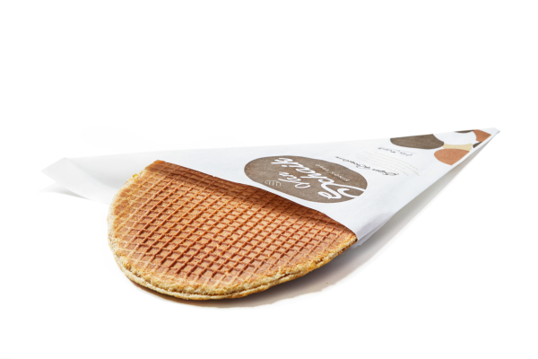
Verse stroopwafel
Knapperige wafel, warme stroop, net van de plaat. Zin in meer? Neem de superwafel.
Stroopwafels op de Vredenburg, Utrecht
Knapperig, vol stroop en nog warm. Kom langs voor stroopwafels en poffertjes, gebakken volgens het eigen recept van Van Schaik, sinds 1960.
4,9 uit 446 Google-reviews
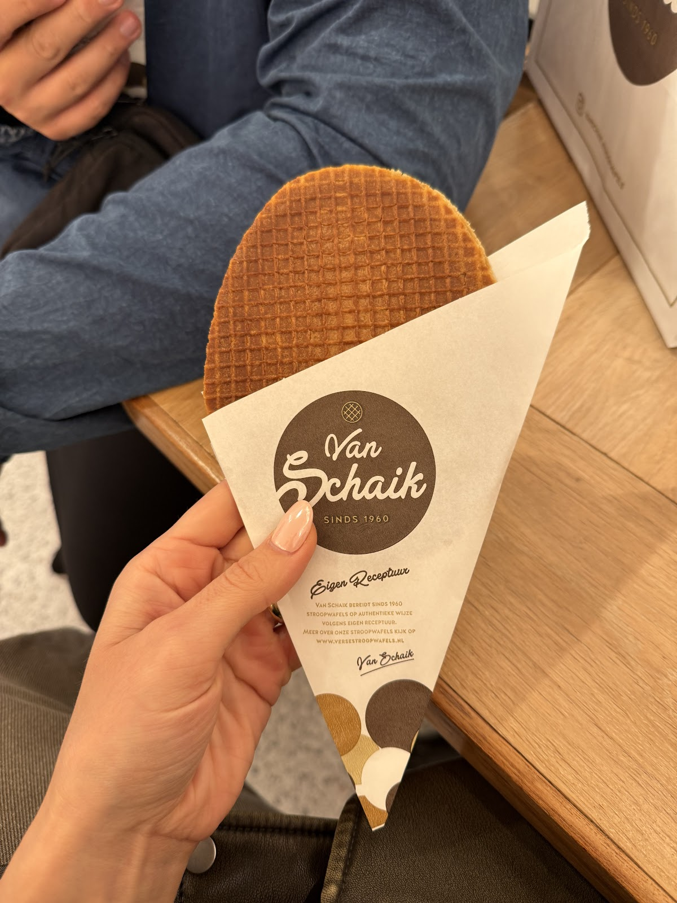
Alles wordt vers gebakken, met de beste ingrediënten en zonder toegevoegde kleur- en smaakstoffen of kunstmatige conserveringsmiddelen. U eet het warm in de winkel of loopt ermee de stad in.

Knapperige wafel, warme stroop, net van de plaat. Zin in meer? Neem de superwafel.
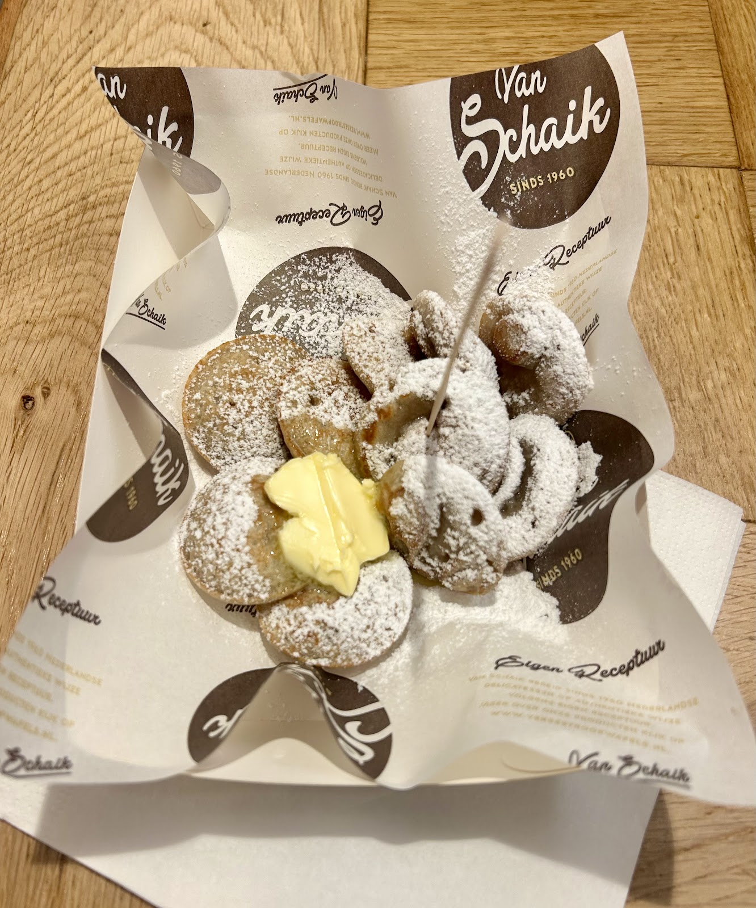
Met boter en poedersuiker, warm uit de pan.
Luchtig deeg met knapperige suiker.
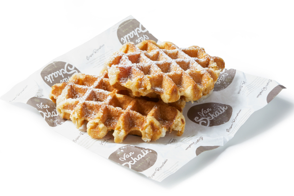
Een traktatie voor uzelf, een cadeau om weg te geven of om samen van te genieten.
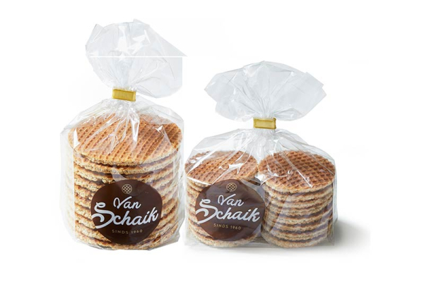
Stroopwafels
Vers verpakt in een zak.
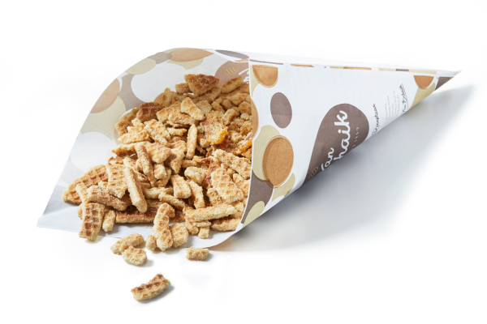
Stroopwafelkruimels
Om zo uit de zak te snoepen.
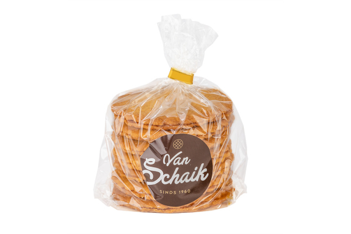
Stroopkoeken
Uit eigen bakkerij.
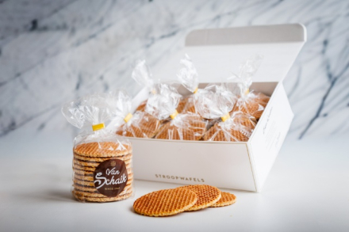
Cadeauartikelen
Dozen, blikken en chocolade specials.
Door de open pui ruikt u het al vanaf de straat. Achter de toonbank bakken we de stroopwafels vers, voor uw ogen, met ingrediënten waar we zelf voor staan.
Neem plaats aan de bar met een warme wafel, of zoek tussen de schappen een cadeau uit: van stroopwafels in een blik tot Delfts blauw.
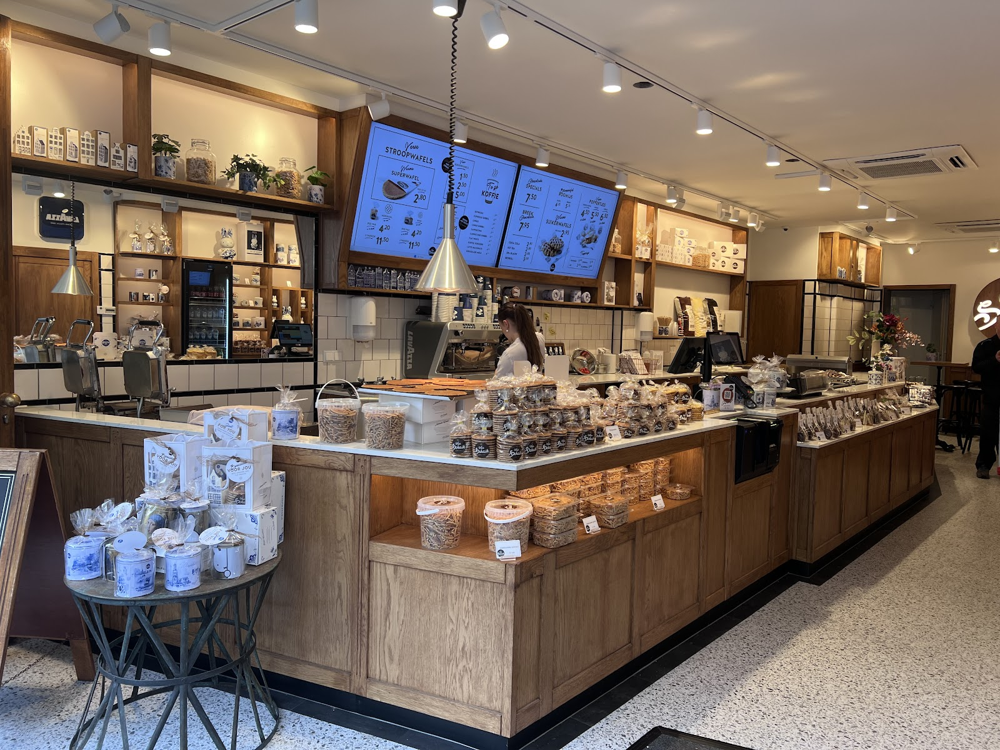
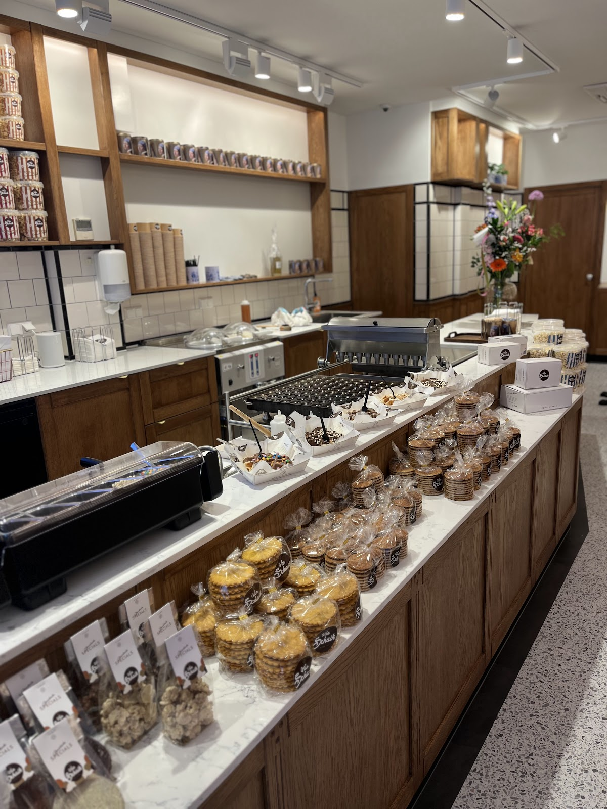
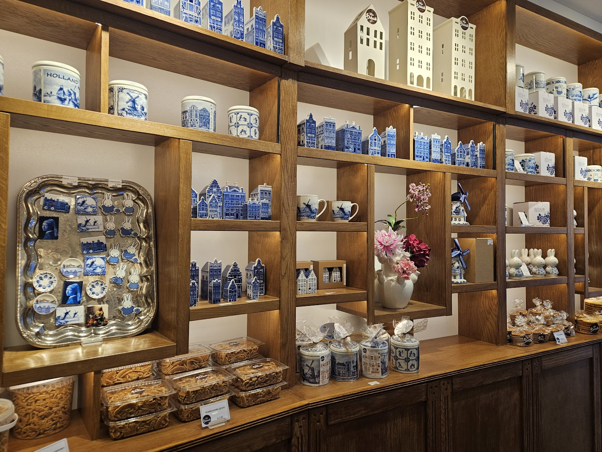
4,9
gemiddeld uit 446 reviews op Google
"Beste en lekkerste stroopwafels van Utrecht. Ben met een glimlach geholpen door Ruben en Emma! Ik zal zeker terug gaan!"
"Wij komen hier altijd om met onze dochter poffertjes te eten. Het ontvangst is altijd gastvrij, de poffertjes heerlijk en dat alles voor een fatsoenlijke prijs!"
"De beste stroopwafel in Utrecht. Lekker vers. Veel keuzes."
"The poffertjes and stroopwaffel was amazing!"
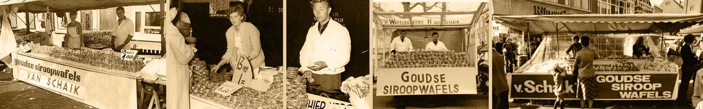
In 1960 begon Herman van Schaik een stroopwafelbakkerij aan de Boomsluiterskade in Den Haag. Met zijn kraam trok hij het hele land door, langs markten, standplaatsen en braderieën.
Zijn wafels maakte hij volgens zijn eigen recept: alleen de beste ingrediënten, zonder kleur- en smaakstoffen. In 2000 nam zijn zoon Michel het familiebedrijf over. Er is sindsdien veel veranderd, maar dat recept niet.
De stroopwafels om mee te nemen komen uit onze eigen bakkerij in Den Haag. Op de Vredenburg proeft u ze vers.
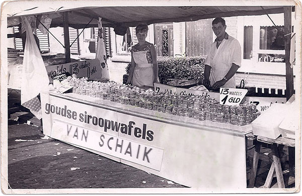
Voor evenementen, winkelopeningen en bedrijfsfeesten komen we met onze klassieke bakfiets. Uw gasten krijgen stroopwafels die ter plekke worden gebakken.
Op de hoek met de Lange Elisabethstraat, midden in het centrum.
| Maandag | 11:00 tot 18:30 |
| Dinsdag | 11:00 tot 18:30 |
| Woensdag | 11:00 tot 18:30 |
| Donderdag (koopavond) | 11:00 tot 20:00 |
| Vrijdag | 11:00 tot 18:30 |
| Zaterdag | 10:00 tot 18:30 |
| Zondag | 12:00 tot 18:30 |
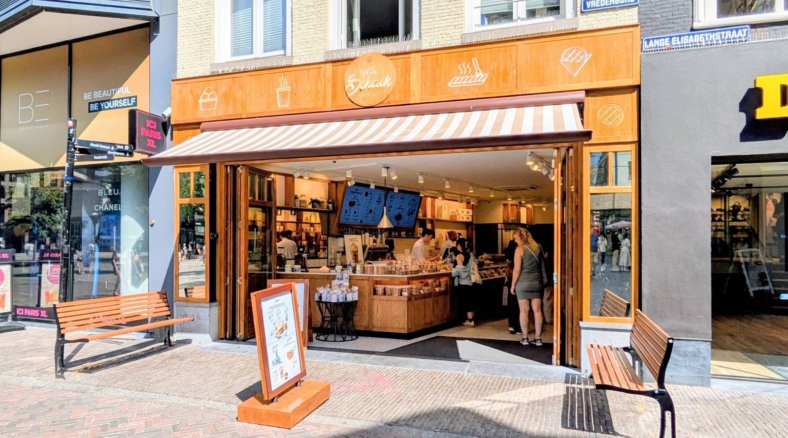